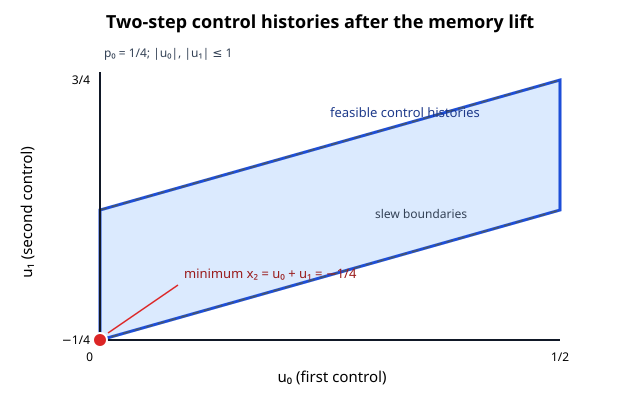

Exploratory microbenchmark: transform and history recovery only. This is not a solver timing or comparison.

Median 45.63 μs per call; range 43.15–56.91 μs. Seven measured batches of ten calls followed one excluded warmup batch. All 70 calls passed.
The limiter was not source-profiled. No speedup, application-scale or scalability claim is made.
| Batch | μs/call | Elapsed ns | Checked calls |
|---|---|---|---|
| 1 | 44.43 | 444334 | 10 |
| 2 | 45.63 | 456346 | 10 |
| 3 | 43.54 | 435395 | 10 |
| 4 | 56.91 | 569141 | 10 |
| 5 | 45.96 | 459629 | 10 |
| 6 | 45.66 | 456627 | 10 |
| 7 | 43.15 | 431483 | 10 |
Raw events · Record · Environment · Manifest · README · Batch table